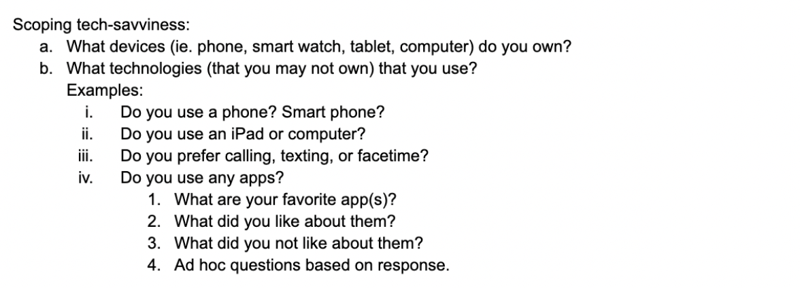
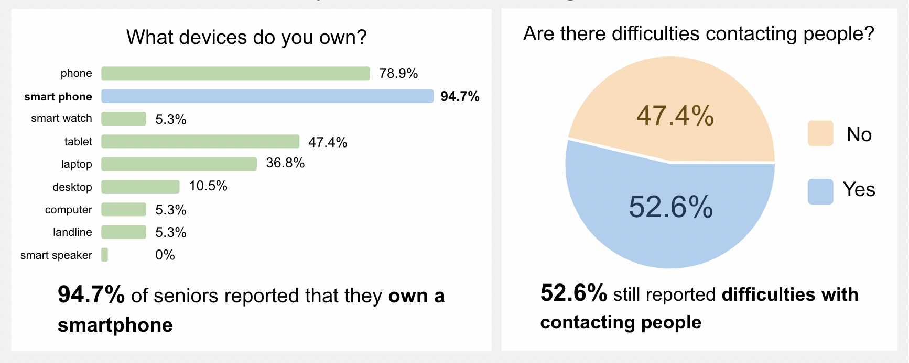

My Role: UI/UX Designer, Project Manager
Accessibility first, not an after-thought. My team worked with Tata Consultancy to create a social networking platform where older individuals experiencing loneliness to connect with each other. Accessible features include ADA compliant color scheme, large text, and zoom-button to adjust content on every page.
Nearly 25% of adults aged 65 and older are considered to be socially isolated. Older adults
are more likely to have experienced the death of a loved one and are also more likely to live
by themselves. oftentimes resulting in feelings of loneliness.
The stress of loneliness can
compound mental and physical health problems like depression and stroke. Loneliness can also
increase one’s vulnerability to theft, exploitation, and abuse.
My team was tasked with creating a technology-based solution to increased loneliness observed in individuals aged 60 and older. Our solution had to not only accommodate needs specific to this age group, but also encourage social interaction amongst its users.
We surveyed 19 individuals from our target population to understand their needs, pain points, and their use of technology. We had to figure out why despite widespread access to a smartphone and the numerous social networking apps for download, a majority of our participants still reported difficulties with contacting others. Additionally, the widespread access to a smartphone was something we could utilize in creating a mobile application.
 We did additional research on design principles for older individuals and those experiencing loneliness. Principles included using big buttons, appropriate font size, readable contrast, and an inviting color scheme.
We created personas to understand how different lifestyles and values influence the way users might use technology.
My team and I created a storyboard of a potential user to explore different ways our app might be used, therefore, what functionalities we might want to include.
We conducted competitive analysis to compare existing solutions/assess their individual pros and cons as a part of our features ideation. Based on our user research, Facebook, Reddit, and AARP are common platforms or resources frequented by seniors. We compared them based on their Homepage, Navigation, Usability, and Aesthetic.
Sketches and wireframes were created to visualize formatting for the various pages of our app at low stakes. After the team and I each drafted sketches of the app, we created a wireframe combining the most favored elements of each sketch.
My team and I held bi-weekly meetings with our stakeholders at Tata Consultancy Services. We incorporated their feedback into our design.
After creating our wireframes, we moved onto one-on-one testing sessions over Zoom. During the testing we asked our participants to perform a series of tasks and comment on the features as well as the design in regards to color scheme, readability, and navigability.
Here are the screens from the final design of our app.